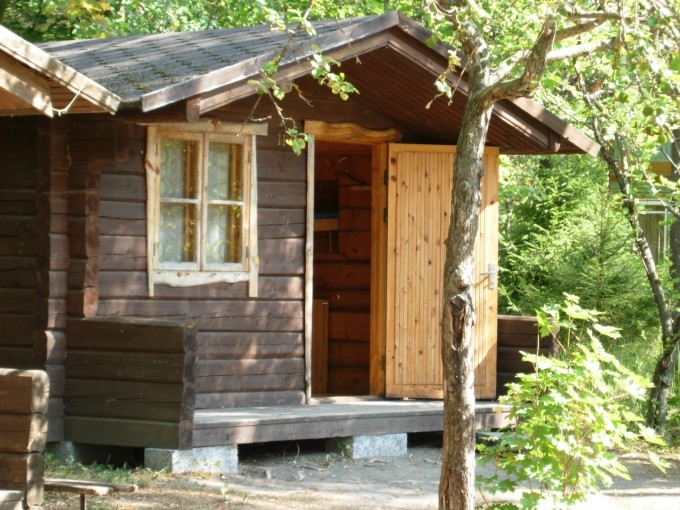
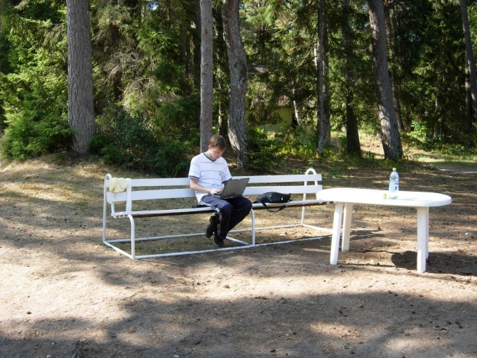
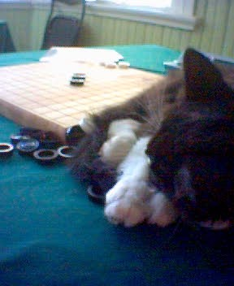
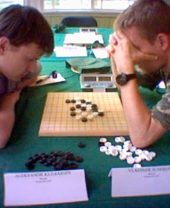

Ants Soosyrv 介绍 “Karepa Camp”
#1 Ants Soosyrv 介绍 “Karepa Camp” 作者：舍露里 发表时间：2009-10-12 13:27:30
Karepa Camp
by Ants Soosyrv
（Karepa: 一个小村庄的名字 Camp: 野营；露营）
Karepa是一个距离爱沙尼亚的首都——塔林110千米的小村庄。Karepa有一个营地，属于塔林的兴趣中心——Kullo。这个营地离波罗的海只有几百米远，是我在爱沙尼亚的主要工作场所，也是爱沙尼亚的连珠活动中心。
1989年夏天的时候，爱沙尼亚的连珠才刚刚开始发展，当时拉脱维亚共和国的棋手比爱沙尼亚的棋手强得很多很多。我们就打算小小的野营活动，顺便举办五子棋比赛，来向拉脱维亚棋手学习。那时候我还没有在Kullo工作（事实上这个兴趣中心当时叫作“塔林少先队员宫”），但是连珠已经被Kullo的学员所熟知，因为西洋棋老师Arvi Reinap对连珠很感兴趣，并且组织了连珠训练小组，包括Ando Meritee, Margus Tuvikene, Renee Pajuste和其他7～15岁的棋手）。Arvi Reinap建议把Karepa营地作为我们和拉脱维亚棋手的比赛场地，所以我们和拉脱维亚的朋友们达成协议，在那里举办个为期一周的野营。
野营活动很成功。我们从拉脱维亚的顶级棋手——Aldis Reims, Arnis Veidemanis和Aigars Rotbergs地方学到了很多。那几天的天气非常棒，海水很温热，所以我们一起游泳、打篮球、作其他的运动，玩得很开心。
理所当然地我们想把这野营当成传统继续下去。拉脱维亚的棋手们把他们在Karepa的美好经历告诉了俄罗斯的棋手，所以在第二年的时候，俄罗斯的棋手也加入进来了。
从1989年开始，我们已经举办了20年的Karepa camp了。我们只在1995年的时候没举办过，因为当时忙着组织世界杯，没时间组织Karepa了。在Karepa，我们举行过几场大规模的比赛：1997年和2003年的欧洲青少年锦标赛，2002年的欧洲锦标赛。多数的欧洲知名棋手至少去过Karepa一次，有些多达十几次，比如说Meritee, Stefan, 和Irene Karlsson, Taimla, Lents, 和我们的朋友Gatis Gurckis。
很可惜，我找不到1989～1994的对阵表了，我会尽量把它们找出来。
以下是从1996年开始的前三名的名单：
1996 （18人，8轮，瑞士积分制）
1.Ando Meritee 7
2. Igor Synyov 6.5
3. Ants Soosyrv 5.5
1997 （14人，7轮，瑞士积分制）
1. Ando Meritee 7
2. Alexander Klimashin 5.5
3. Vladimir Sushkov 4.5
1998 （14人，7轮，瑞士积分制）
1. Ando Meritee 5.5
2. Stefen Karlsson 5
3. Rickard Johannesson 4.5
1999 （9人，循环制）
1. Ando Meritee 8
2. Stefen Karlsson 7
3. Ants Soosyrv 6
2000 (12人，7轮，瑞士积分制）
1. Alexander Klimashin 7
2. Vladislav Kareyev 5.5
3. Pavel Ses 5
2001（Karepa规则——由Ando Meritee在1997年提出：第一手棋可以落在棋盘上任何一个位置，可以交换，第5手没有其他打点，9人，5轮，瑞士积分制）
1. Alexander Klimashin 5
2. Ants Soosyrv 4
3. Marko Pellikka 3
2001 （RIF规则，11人，5轮，瑞士积分制）
1. Alexander Klimashin 5
2. Ants Soosyrv 4
3. Margus Tuvikene 3.5
2002 欧洲锦标赛 （9轮，瑞士积分制，22人）
1. Igor Sinyov 8
2. Tunnet Taimla 6.5
3. Pavel Makarov 6
2003 （11人，循环制）
1. Ando Meritee 10
2. Alexander Klimashin 9
3. Konstantin Nikonov 7.5
2004 (Sakata规则，7轮，12人）
/*760*90，创建于2012-2-9*/ var cpro_id = 'u761865';
#2 一些照片 作者：舍露里 发表时间：2009-10-12 13:51:26

我们一直期待举办大型的比赛，也希望举办些针对不太有经验的棋手的B类比赛、gomoku比赛、青少赛，或是仅仅为了朋友们来聚会，大概总共30～40人这样。
之前我们住在更大些的屋子里，不过那些屋子年久失修，所以我们现在住在些像这样的小房子里。

无线网络是可以用的哦，所以带上你的笔记本来吧！

在2005年的Karepa公开赛上，一只当地的可爱的猫跳上了正在比赛的桌子。它躺了下来，打着呼噜睡着了。比赛结束的时候它还在睡觉。这张照片是Ando在比赛结束后拍的。

终于可以看到比赛照片了。这张图上的两个棋手是俄罗斯的“非著名初学者”， 你们可以猜猜他们是谁：）
小小的提示：其中的一位是今年的世界冠军，另一位已经拿过两次的欧洲冠军了！
#3 体育传统 作者：舍露里 发表时间：2009-10-12 13:53:51
我刚才说过了，我们每次都在Karepa打篮球。1989～1994年我们打过多场“拉脱维亚vs爱沙尼亚”的“正式”比赛。拉脱维亚队有个很好的狙击手——Arnis Veidemanis。 Aldis Reims, Aigars Rotbergs, Gatis Gurckis 和 Nils Teterovskis supported是他强大的后援。
我们队（
Ain Ostra, Ando Meritee
，和一些不太知名的棋手）尽全力地和他们打，不过最后通常仍然是拉脱维亚赢，比分常常是
100
：
99
或
100
#4 Re:Ants Soosyrv 介绍 “Karepa Camp” 作者：无尽 发表时间：2009-10-12 13:57:42
2楼最后一图
左：Alexander Klimashin 右：Vladimir Shshkov
#5 Re:Ants Soosyrv 介绍 “Karepa Camp” 作者：小丸.net 发表时间：2009-10-12 14:54:25
＂黑手党＂怎么玩？#6 Re:Ants Soosyrv 介绍 “Karepa Camp” 作者：雅匪 发表时间：2009-10-12 15:14:29
因为翻译作品狠少，所以更显珍贵
欢迎这样的作品，向翻译者致敬
#7 Re:Ants Soosyrv 介绍 “Karepa Camp” 作者：水月 发表时间：2009-10-12 23:41:48
看起来洋人用的棋子不太好啊。。。啥时候弄两副云子贿赂俄国人。。。让他收我为徒。。。
#8 Re:Re:Ants Soosyrv 介绍 “Karepa Camp” 作者：uniwin 发表时间：2009-10-13 9:05:03
7楼的，让俄国人拜你为师，岂不更好
#9 Re:Ants Soosyrv 介绍 “Karepa Camp” 作者：极地剑客 发表时间：2009-10-13 9:32:40
8楼没明白7楼意思~冲着小黑无敌终结版去的~
#10 Re:Ants Soosyrv 介绍 “Karepa Camp” 作者：杨文浩 发表时间：2009-10-21 11:09:13
ANTS先生说欢迎中国棋手去，我想知道怎么才能去，虽然不能用连珠干掉他们，乒乓总可以我，我还是校队的。#11 Re:Re:Ants Soosyrv 介绍 “Karepa Camp” 作者：舍露里 发表时间：2009-10-21 11:37:27
引用：这个活动通常在每年的八月份，你过去的话他们肯定很欢迎的
原文由 杨文浩 发表于 2009-10-21 11:09:13 :
ANTS先生说欢迎中国棋手去，我想知道怎么才能去，虽然不能用连珠干掉他们，乒乓总可以我，我还是校队的。
#12 Re:体育传统 作者：励精 发表时间：None
引用：
原文由 舍露里 发表于 2009-10-12 13:53:51 :我刚才说过了，我们每次都在Karepa打篮球。1989～1994年我们打过多场“拉脱维亚vs爱沙尼亚”的“正式”比赛。……
我们队（Ain Ostra, Ando Meritee ，和一些不太知名的棋手）尽全力地和他们打，不过最后通常仍然是拉脱维亚赢，比分常常是100：99或100：98。爱沙尼亚总算在1994by:web版
IP： 已记录
#13 Re:Ants Soosyrv 介绍 “Karepa Camp” 作者：失落刀 发表时间：2009-10-23 7:16:55
穿拖鞋打篮球的是哪位大侠？#14 Re:Ants Soosyrv 介绍 “Karepa Camp” 作者：潇洒 发表时间：2009-10-23 9:03:51
看着像阿福。。
#15 Re:Ants Soosyrv 介绍 “Karepa Camp” 作者：极地剑客 发表时间：2009-10-26 5:48:57
是蛮像阿福的~后面那个白衣服蛮像天津小豆的~